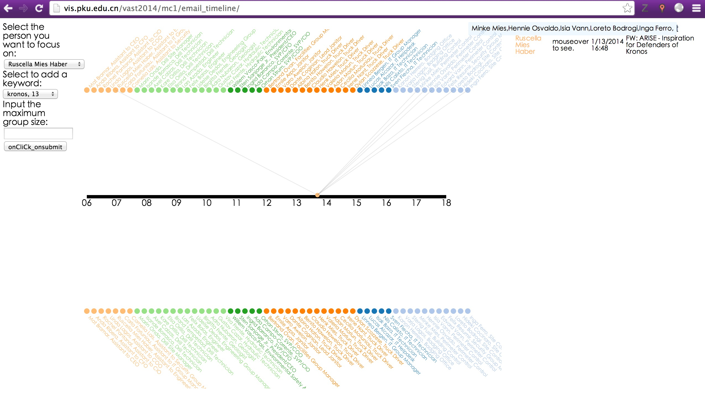
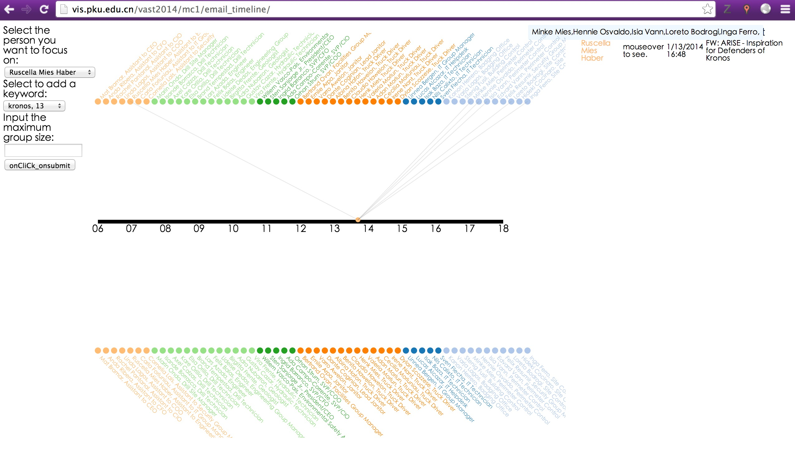
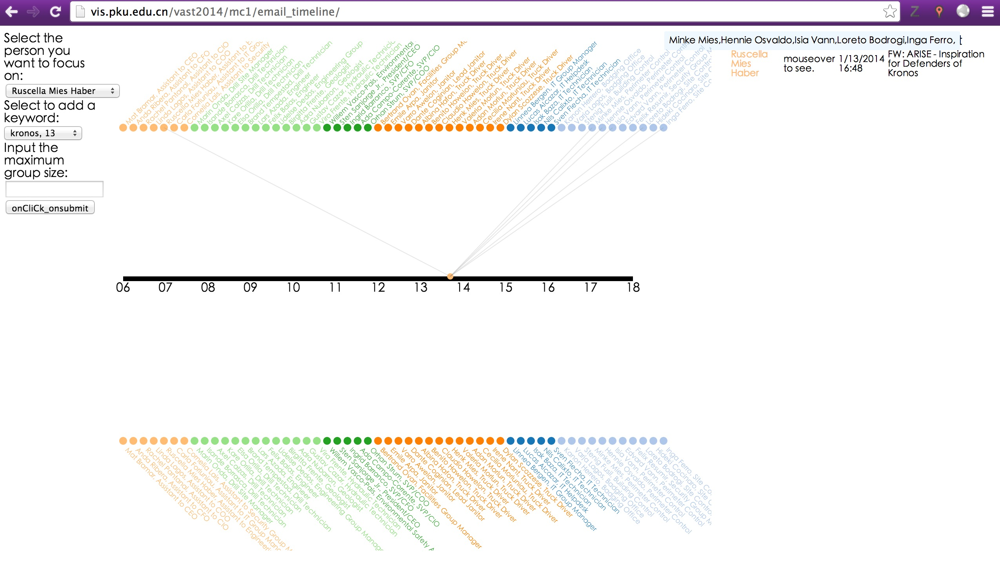

The challenge was on HERE. We developed a analysis tool consists of three views for this challenge: Resume Reader, News Timeline and Email Reader. Through interactions, analysts can discover the development of events and find the suspicious people in the events.
It won the Award for Excellent Detailed Analysis on this challenge.

 
